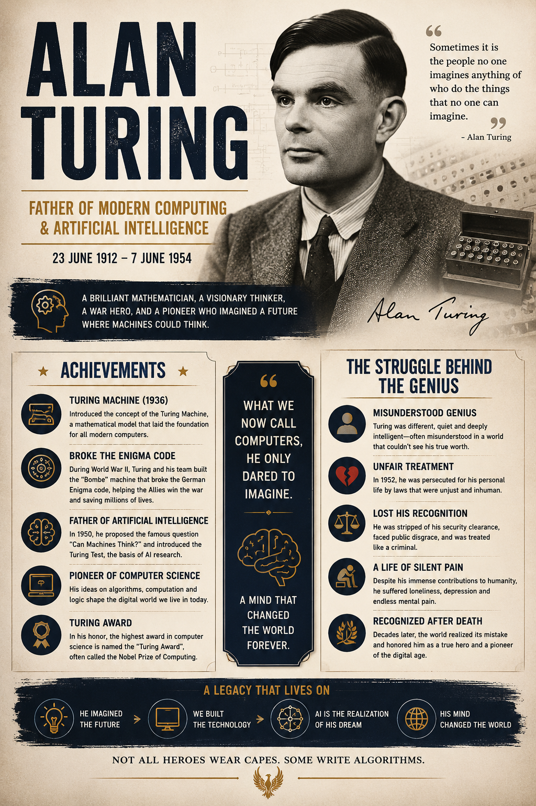

Voice Note
दुनिया हर वक्त नए आविष्कारों, नए एक्सपेरिमेंट्स और नई सोच के साथ आगे बढ़ती हुई नज़र आती है। और यही सोच, यही कामयाबियाँ और यही उपलब्धियाँ हासिल करने के लिए कोई न कोई हर बार इस दुनिया में जन्म लेता हुआ नज़र आता है, जिसकी सोच और जिसकी कामयाबियाँ लोगों की सोच और उनकी कल्पनाओं से परे होती हैं।
एक ऐसे ही शख्स, जिनके सम्मान में आज लोग बड़े-बड़े पुरस्कार और उपलब्धियाँ उनके नाम से जोड़ते हुए नज़र आते हैं, जिन्हें मैं और आप AI के Grandfather "एलन ट्यूरिंग" के नाम से जानते हैं।
एलन ट्यूरिंग एक ऐसी शख्सियत थे जो एक नई सोच, एक नई कल्पना के साथ इस दुनिया में आए। उनकी सोच, उनकी कल्पना दुनिया के हर इंसान से बहुत अलग थी। और यही वजह थी कि उन्हें बचपन में बहुत संघर्ष और अकेलेपन से होकर गुजरना पड़ा।
मगर इंसान की ज़िद और उसका हौसला अगर मज़बूत हो, तो वह अपनी सोच और अपनी कामयाबियों को नई बुलंदियों तक पहुँचाता हुआ नज़र आता है।
एलन ट्यूरिंग ने अपने हौसले को नहीं तोड़ा, अपनी सोच को नहीं छोड़ा और इसी कारणवश उन्होंने द्वितीय विश्व युद्ध के दौरान एक ऐसे कोड को डिकोड किया, जिसे दुनिया का कोई भी इंसान तोड़ नहीं पा रहा था।
उन्होंने अपने जीवन में भविष्य में आने वाली उस आधुनिक तकनीक की नींव रखी, जिसे आज हम और आप "AI" के नाम से जानते हैं।
उन्होंने बहुत सारी कामयाबियाँ और बहुत सारे Achievements हासिल किए। मगर जैसा कि दुनिया की रीत है, जब तक आपकी कामयाबियाँ और आपकी उपलब्धियाँ लोगों के काम आती हैं, तब तक आपकी कदर की जाती है, आपको सर आँखों पर बिठाया जाता है और आपकी इज़्ज़त की जाती है।
मगर जब लोग आपसे ऊब जाते हैं, तब आपकी इतनी सारी उपलब्धियों पर आपकी एक कमी, आपकी एक कमज़ोरी भारी पड़ती हुई नज़र आती है।
इस चीज़ को एलन ट्यूरिंग के उदाहरण से समझा जा सकता है।
उनकी एक व्यक्तिगत कमजोरी और उस समय के सामाजिक नियमों के कारण उन्हें दुनियावालों से अपमान सहना पड़ा। उनके ऊपर कानूनी कार्रवाई की गई।
समझने और सोचने से वह दर्द और वह तकलीफ़ महसूस नहीं होती, मगर जब आपकी उपलब्धियों और आपके Achievements पर लोग ताने मारते हुए नज़र आते हैं, तो दिल अंदर से टूट जाता है, कलेजा फटता हुआ महसूस होता है। आँसू आँखों से नहीं, बल्कि दिल से निकला करते हैं।
इसी दर्द और अकेलेपन के बीच 7 जून 1954 को एलन ट्यूरिंग की मृत्यु हो गई।
मैं बस इतनी आशा करता हूँ कि आज हम जो सम्मान और जो इज़्ज़त उन्हें दे रहे हैं, उसकी वजह से उनकी आत्मा को खुशी मिले और उन्हें पहुँचाए गए ज़ख्म कुछ कम हो जाएँ।
धन्यवाद।
Back